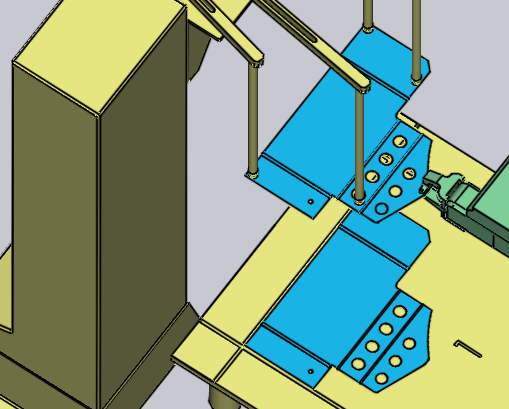
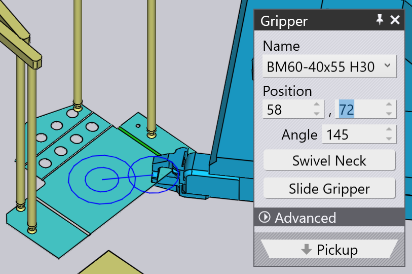

Coleta no distribuidor
As peças pequenas são manuseadas usando uma pinça mecânica, também conhecida no TecZone Bend como uma pinça de mordente. Se a peça for menor que o tamanho A4, TecZone Bend mudará automaticamente para o uso de uma pinça com mordente. Essa pinça só pode pegar peças a partir de uma estação de distribuição (também conhecida como o dispensador de chapas sob medida). Esses parâmetros influenciam este processo de coleta:
-
A posição e orientação do dispensador na célula da máquina.
-
A orientação da peça no dispensador.
-
A posição e orientação da pinça com mordente na peça.
Os painéis usados para editar todas essas configurações são exibidos abaixo - eles são todos interconectados por links de navegação para cima/para baixo que levam a outros painéis em uma sequência lógica:

Como mostra a imagem acima, esses painéis também podem ser acessados facilmente clicando em diversos objetos na simulação:
-
Para abrir o painel Dispensador, clique no dispensador.
-
Para editar a orientação da peça no dispensador, clique na chapa sob medida no dispensador (defina o estágio atual para a Coleta primeiro, clicando na coluna P no navegador).
-
Para editar a posição de retenção da pinça na peça, clique na pinça.
Painel Dispensador
Clique no dispensador para abrir o painel Dispensador. TecZone Bend coloca a peça no canto de alinhamento do dispensador e posiciona os braços da pinça de vácuo nos cantos da peça. Você pode editar a configuração do braço e o local do dispensador usando este painel.

-
Use as configurações Erguer, Posição e Ângulo para definir a posição e a orientação do dispensador, para fazer com que ele corresponda à posição na célula.
Configuração de sucção
As configurações na configuração Sucção são usadas para configurar os braços de ventosas. Essas configurações são meramente indicativas e não são críticas, uma vez que não são transmitidas para a máquina no programa CN. O operador da máquina precisará configurar os braços manualmente (talvez consultando a ficha de configuração que acompanha o programa CN).
-
Selecione um Braço e edite as configurações Ângulo e Comprimento para girar e estender o braço até que as ventosas estejam posicionadas na peça.
-
Use a configuração Tipo para alterar as ventosas montadas no dispensador.
| Uma vez que a configuração de ângulo e comprimento dos braços não faz parte do programa CN gerado pelo TecZone Bend, ele realmente não verifica se os braços não estão cruzados ou em interseção um com o outro. |
Painel de Coleta
O painel de Coleta é usado para configurar a orientação da peça no dispensador. Ao girar ou inverter a peça, TecZone Bend escolherá um plano apropriado pelo qual segurar a peça (uma vez que a pinça sempre pode entrar apenas de uma direção). Você pode abrir este painel clicando no espaço em branco no dispensador.

-
O botão Manipular a peça é usado para girar a peça em 90 graus. Na imagem acima, a peça não está em uma orientação ideal para referenciar contra o canto do dispensador. Aqui está um resultado melhor, depois de algumas operações de rotação:

-
Se as chapas sob medida no dispensador forem invertidas, você pode usar o botão Virar a peça para inverter o modelo para corresponder:

Alinhar qualquer Borda
Às vezes, essas rotações de 90° podem não ser suficientes. Suponha que você queira alinhar a borda alvo (indicada na imagem abaixo) com a referência Z no dispensador:

Clique em Alinhar canto e escolha a opção Alinhar em Z no menu que aparece. Em seguida, clique na peça perto da borda alvo. Essa borda agora fica alinhada com a referência do dispensador. O resultado é mostrado below[1], após alguns ajustes na posição e orientação da pinça para melhor se adequar a este novo alinhamento):

Painel Pinça
O painel da pinça é usado para posicionar a pinça na peça, mude para uma pinça diferente, e para configurar os eixos de rotação e deslizamento da pinça quando ela está coletando a peça.

-
Use a lista Nome para selecionar uma nova pinça da lista de pinças com mordentes disponíveis para esta máquina. À medida que você navega pelos nomes na lista, é exibida uma miniatura da pinça:

-
Use as configurações Ângulo e Posição para posicionar e orientar a pinça em relação ao ponto central do plano de pinçagem. Este centro é indicado pelos círculos duplos na imagem acima. Aqui está a mesma pinça de acima, depois de ajustarmos a posição e o ângulo:
 -
Os botões Deslocar e Virar mordente são usados para alterar a configuração do pescoço e deslizamento da pinça. Aqui estão os resultados de iniciar da primeira configuração acima e aplicar estas operações:

-
O botão Utilizar pinças a vácuo muda a peça para o uso de uma pinça a vácuo. Este é efetivamente um recálculo completo da peça. O dispensador não é mais usado, e a peça é retirada de um palete. A sequência de dobras, operações de remanipulação e padrão de depósito são todos recalculados para torná-los mais adequados para uma pinça a vácuo.
Mudando o Plano de Pinça
O comando Selecionar a superfície de agarramento é usado para segurar a peça por um plano diferente. Clique neste botão e, em seguida, mova sobre o plano para o qual você deseja mover a pinça. Ao fazer isso, uma cruz é desenhada nesse plano para indicar que ele está selecionado:

Clicar no plano move a pinça para esse plano, como mostrado na imagem abaixo.Normalmente, essas mudanças no Plano da pinça também exigirão algumas alternâncias na sequência de dobra, alterações nas operações de remanipulação, etc.